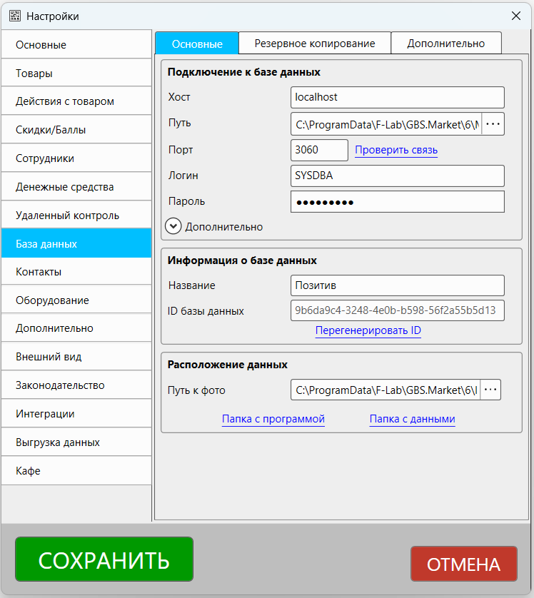
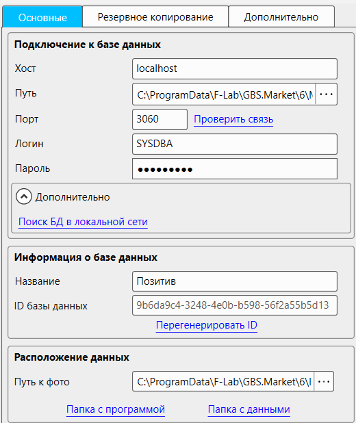
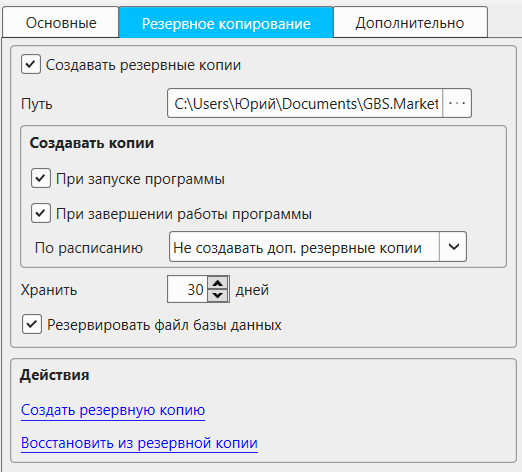
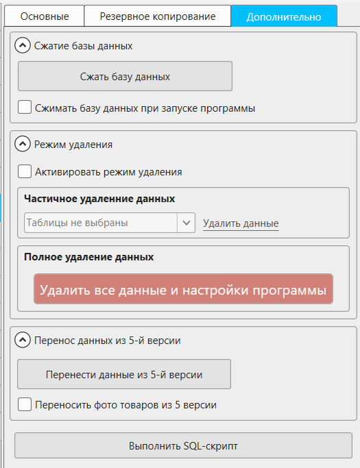
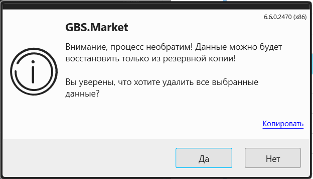

Раздел настроек "База данных", в котором размещены параметры, связанные с подключением и работой с базой данных.
Чтобы открыть настройки "База данных":
- на главной форме в меню нажмите Файл - Настройки
- перейдите в раздел "База данных"

В разделе "База данных" настройки разделены на вкладки:
- Основные
- Резервное копирование
- Дополнительно
Основные
Описание настроек, доступных на вкладке "Основные" в разделе "База данных"

Подключение к базе данных
Параметры, отвечающие за подключение к базе данных.
Полезные материалы
Хост
Адрес хоста (ПК, сервера), на котором запущена СУБД Firebird. Для работы в рамках одного компьютера должно быть указано localhost.
Порт
Номер порта для подключения к БД. По умолчанию используется 3060.
Проверить связь
Проверка связи с СУБД с указанными настройками. Может быть полезна при настройке работы по локальной сети.
Путь
Путь к файлу базы данных
Логин
Логи пользователя базы данных
Пароль
Пароль пользователя базы данных
Важно!
Изменение логина или пароля для подключения к базе данных в настройках программы необходимо выполнять только в том случае, если они были изменены в СУБД. Сам факт изменения логина/пароля не изменит их в СУБД, а скорее приведет к невозможности последующего запуска программы.
Дополнительно
"Поиск БД в локальной сети" осуществляет автоматический поиск ip-адреса сервера (компьютера с базой данных).
Информация о базе данных
Название
Название базы данных, которое отображается в режиме "дом/офис" и на главной форме программы
ID базы данных
Идентификатор базы данных, который используется при синхронизации
Перегенирировать ID
Сброс идентификатора базы данных. Не рекомендуется выполнять без консультации службы поддержки.
Расположение данных
Путь к фото
Путь к папке, в которой хранятся фотографии (изображения) товаров и групп товаров
Папка с программой
Папка, в которой хранятся исполняющие файлы программы и подключаемые библиотеки
Папка с данными
Папка, в которой хранятся настройки, база данных, фотографии товаров и другие данные, вносимые пользователями в программу.
Некоторые данные, например, шаблоны, БД и фото могут храниться в других папках, в зависимости от настроек.
Полезные материалы
Резервное копирование
Описание настроек на вкладке "Резервное копирование" в разделе "База данных".

Полезные материалы
Создавать резервные копии
Если опция включена, то программа будет создавать резервные копии
Важно
Настоятельно рекомендуем создавать резервные копии автоматически и настроить их выгрузку в "облако"
Путь
Путь к папке, в которую будут сохраняться автоматически создаваемые резервные копии
Создавать копии
Выбор условий, при которых будет происходить создание резервных копий
Доступные варианты:
- При запуске программы - резервная копия будет автоматически создаваться в момент запуска программы
- При завершении работы программы - резервная копия будет автоматически создаваться в момент завершения работы программы
- По расписанию - возможность выбора вариантов автоматического создания резервных копий с определенной периодичностью
Варианты расписания:
- Не создавать доп. резервные копии - резервные копии по расписанию не будут создаваться
- Каждый час - резервные копии будут создаваться автоматически 1 раз в час
- Каждые 3 часа - резервные копии будут создаваться автоматически 1 раз в 3 часа
- Каждые 6 часов - резервные копии будут создаваться автоматически 1 раз в 6 часов
- Каждые 12 часов - резервные копии будут создаваться автоматически 1 раз в 12 часов
Хранить ... дней
Количество дней, которые будут храниться резервные копии.
При запуске программа проверяет папку с резервными копиями. Копии, старше указанной даты будут удалены.
Резервировать файл базы данных
Если опция включена, то при создании резервной копии будет архивирована и база данных.
Отключать опцию рекомендуется только при работе нескольких компьютерах в локальной сети, чтобы каждый из них не пытался создавать резервную копию базы, увеличивая нагрузку на сеть.
Важно
Не отключайте данную настройку, если не уверены, что понимаете ее предназначение
Действия
Создать резервную копию
Ручное создание резервной копии.
Полезные материалы
Восстановить из резервной копии
Восстановление данных из резервной копии.
Полезные материалы
Дополнительно
Описание настроек на вкладке "Дополнительно" в разделе "База данных"

Сжатие базы данных
Сжать базу данных
При нажатии происходит попытка уменьшить размер базы данных за счет создания и последующего восстановления данных из резервной копии.
Сжимать базу данных при запуске программы
Если опция включена, то при запуске программы будет предпринята попытка сжатия базы данных.
Режим удаления
Опасно
Если вы не знаете для чего необходимы эти настройки - не используйте их. Использование режима удаления необходимо для удаления информации из базы данных. Удаление в большинстве случаев происходит безвозвратно. Перед использованием этих настроек убедитесь, что у вас есть резервная копия!
Активировать режим удаления
Опция позволяющая включить режим удаления
Частичное удаление данных
Частичное удаление данных позволяет удалить часть информации из базы данных. Например, это может быть полезно для переноса информации на другое рабочее место.
На выбор доступно удаление следующих таблиц данных:
- Продажи
- Поступления
- Списания товаров
- Инвентаризации
- Заказы/резервы
- Перемещения между точками
- Перемещения между складами
- Производство
- Движение средств
- Обнулить остатки
- Категории товаров
- Товары
- Группы контактов
- Контакты
Выберите таблицы, в которых необходимо удалить данные, и нажмите кнопку "Удалить данные"
Программа запросит подтверждение на выполнение операции.

Нажмите "Да" для того, чтобы начать удаление выбранных данных.
Полное удаление данных
Опасно
Использование этой опции удалит всю информацию: базу данных, шаблоны, настройки и другие данных, хранящиеся в папке с данными. Убедитесь, что никакие критически важные данные случайно не попали в папку с данными программы. Убедитесь, что у вас есть резервная копия на случай необходимости восстановить информацию
Нажмите кнопку "Удалить все данные и настройки программы" для полной очистки данных программы. Будут удалены все файлы, хранящиеся в папке с данными, включая базу данных, настройки, шаблоны документов, изображения товаров и т.п.
Перенос данных из GBS.Market 5
Раздел настроек, связанных с импортом данных из предыдущей версии программы.
Полезные материалы
Перенести данные из GBS.Market 5
Позволяет выполнить перенос данных из 5-й версии программы
Переносить фото товаров из 5 версии
Если опция включена, то при переносе данных будут в т.ч. перенесены и фотографии товаров
Выполнить SQL-скрипт
Опасно
Перед выполнением скриптов убедитесь, что у вас есть резервная копия данных
Нажмите на кнопку "Выполнить SQL-скрипт", чтобы выполнить скрипт для внесения изменений в базу данных.
После нажатия кнопки откроется окно выбора файла скрипта, который будет запущен.